Vicky
Vicky是2015年北航Toastmasters里一位气质独特的成员。小编在介绍她时给了她"学霸"的标签，并把她比作《海贼王》里那位"总有着不为他人知道的故事"的考古学家妮可·罗宾。这两个比喻几乎概括了她：聪慧、沉静，又带着一点不肯轻易示人的神秘——以至于有人打趣说"她每一篇演讲的题目都是个秘密"。
2015年春天，她已经站上了俱乐部的舞台。4月里她两次担任会议主席（Toastmaster），主持了"A Sense of Control"和"Your Moon & My Heart"两场例会；与此同时，她也在稳步推进自己的演讲路径，从CC2一路讲到CC4。她讲过《Emotional Expression》谈情绪的表达，讲过《The Story of Two Kids》把童年的故事娓娓道来，也以"医生Vicky"的口吻在《How to Eat Healthily》里聊健康饮食，还在《The Way You Are》里劝人别在快节奏的都市里弄丢自己。
她不只满足于例会。2015年春季比赛她报名了中文演讲，被写进"华山论剑"的群雄谱；到了秋季比赛，她又站上英文组的赛场，和Joy、Nancy一起被画成"海贼"出征。无论中文还是英文，无论主持还是参赛，她都是那个安静却不容忽视的存在——正如小编所说，北航头马的停留与辗转，悄悄成了她人生路上"一笔浓妆"，而每一次蜕变后的她，都在用演讲告诉大家，什么是不一样的"学霸"。
里程碑
- 2015-03-13 首次登上比赛舞台 ↗参加2015春季比赛中文演讲组'华山论剑'。
- 2015-04-10 两度担任会议主席 ↗4月主持'A Sense of Control'与第91次'Your Moon & My Heart'例会。
- 2015-05-15 演讲马拉松完成CC2 ↗在俱乐部首场Speech Marathon上演讲《Emotional Expression》。
- 2015-08-14 出征秋季比赛英文组 ↗与Joy、Nancy同台，被画成'海贼'妮可·罗宾出征英文演讲赛。
- 2015-08-28 担任即兴主持TTM ↗第108次'Self-break'例会出任Table Topic Master。
闯关之路 · Competent Communication
做过的演讲 · 6 场
担任过的职务 · 俱乐部官员
担任过的会议角色
为俱乐部做的事
- 多次担任会议主席(Toastmaster)，主持'A Sense of Control'、'Your Moon & My Heart'等例会，撑起会议流程。
- 担任即兴环节主持(TTM)，引导'Self-break'主题的即兴讨论。
- 代表俱乐部参加2015春季(中文)与秋季(英文)两届演讲比赛，为俱乐部出征。
- 持续完成CC2至CC4备稿演讲，以多样题材为例会贡献内容。
照片墙 · 时间线
 ✓
✓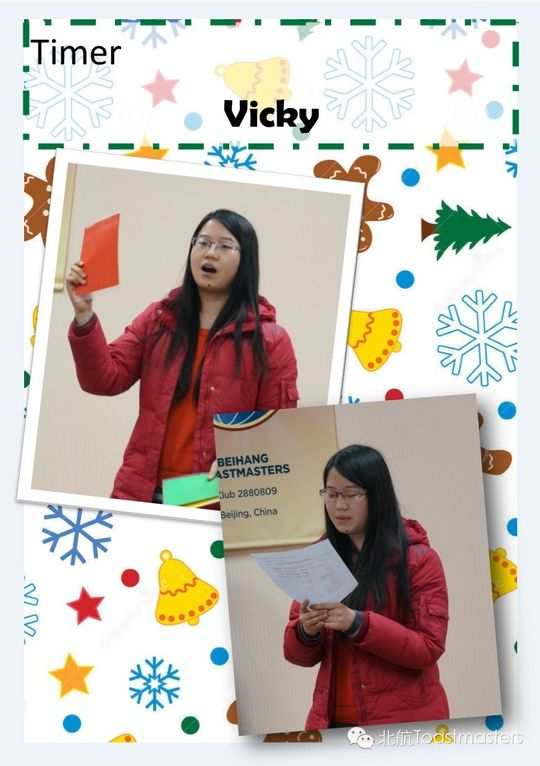
✓ ✓
✓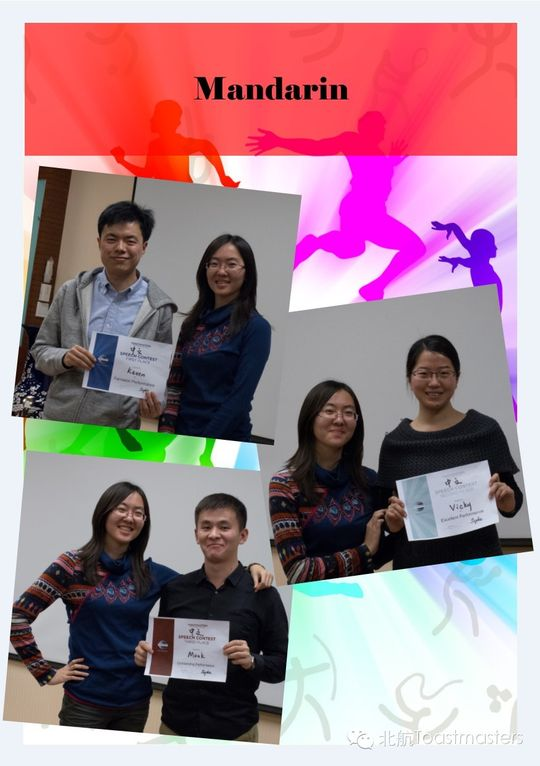
✓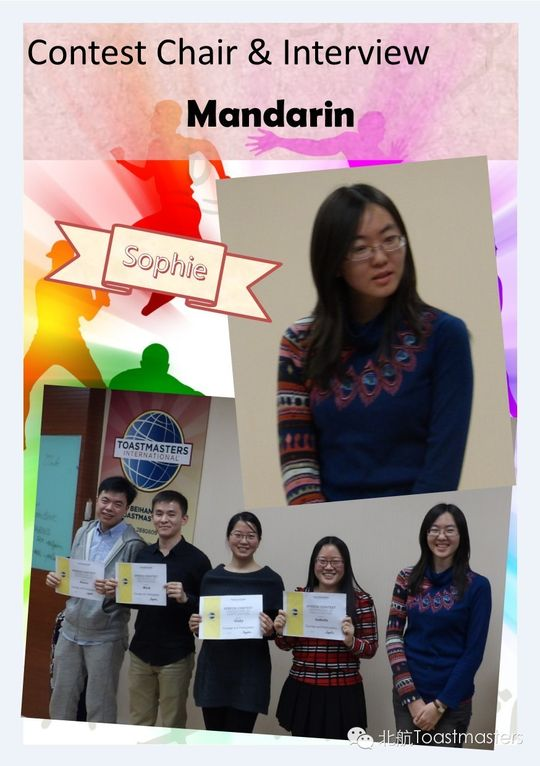
✓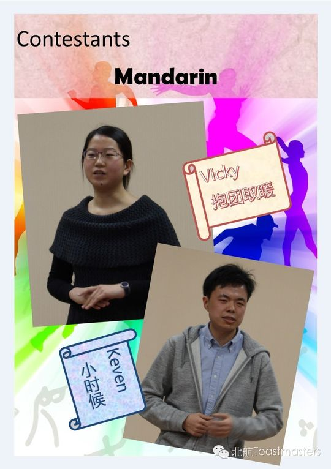
✓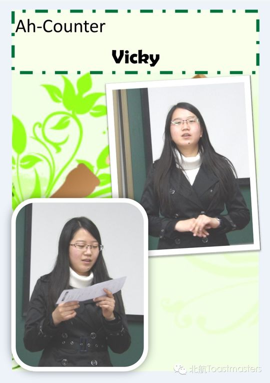
✓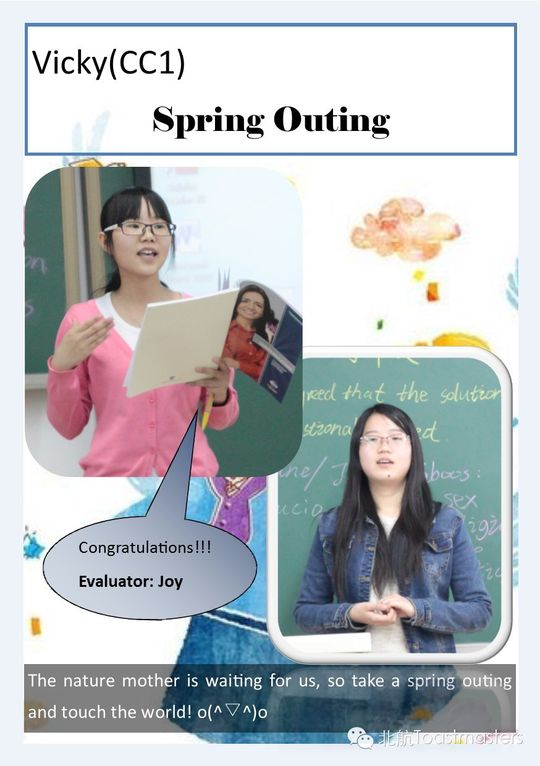
✓ ✓
✓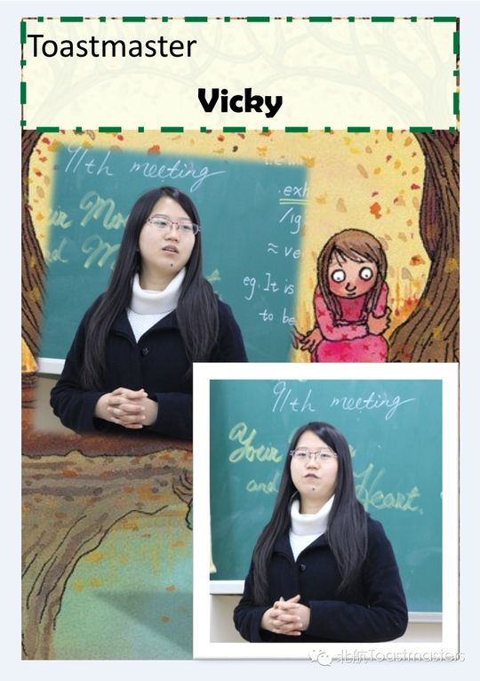
✓ ✓
✓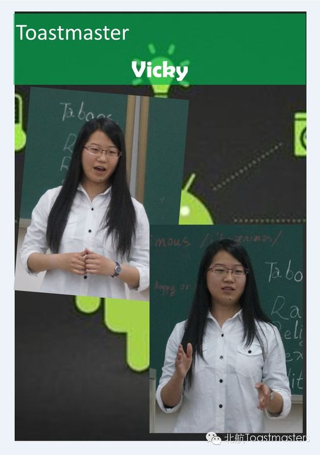
✓ ✓
✓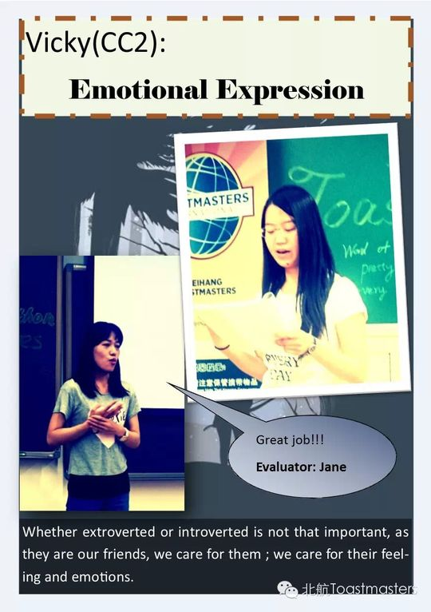
✓ ✓
✓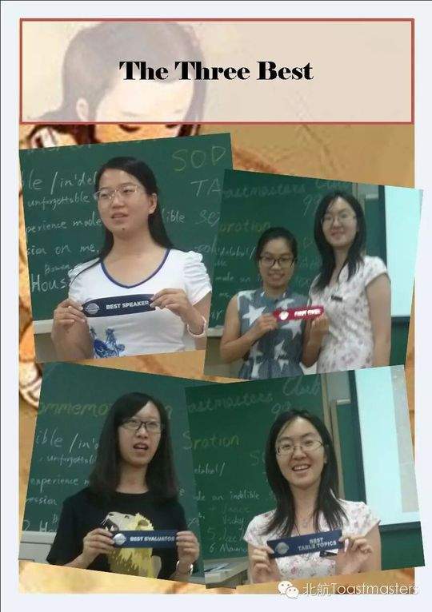
✓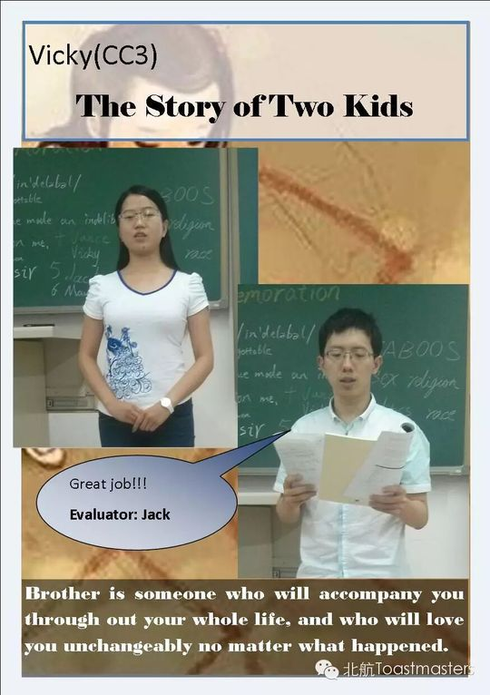
✓ ✓
✓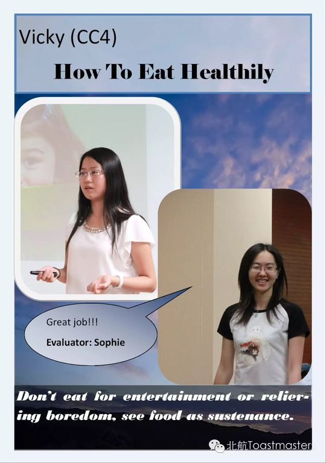
✓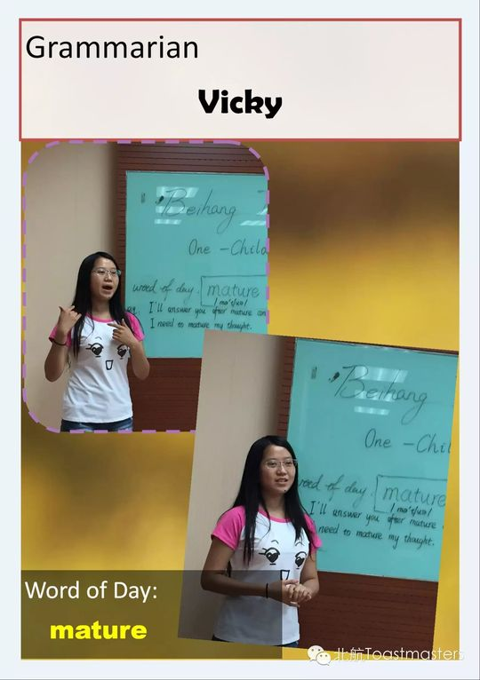
✓ ✓
✓ ✓
✓ ✓
✓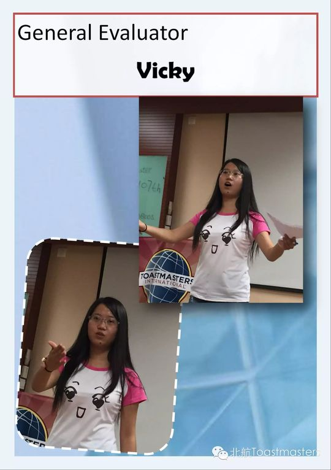
✓ ✓
✓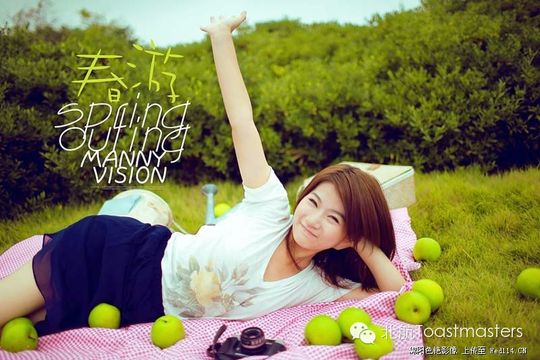

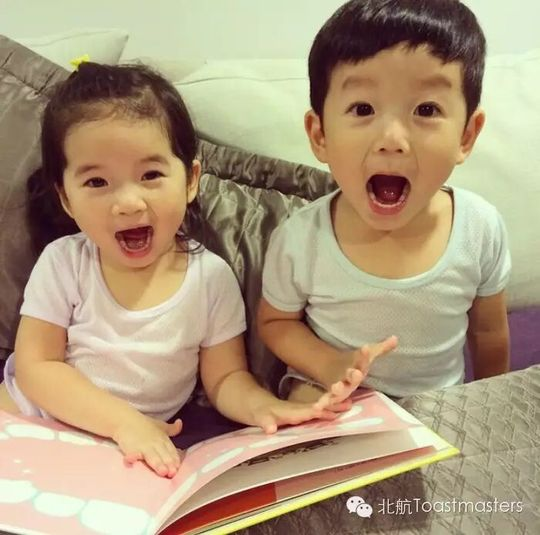
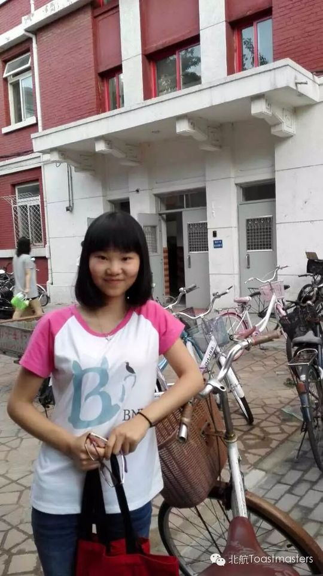
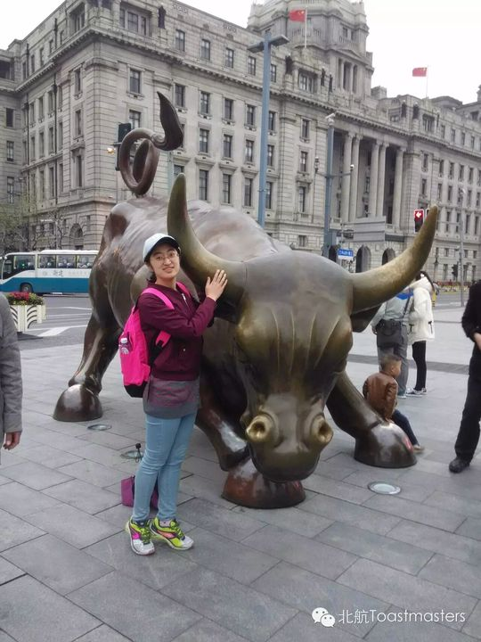
完整足迹 · 11 次出现（点开，每条可跳转原文）
- 2015-03-12第87次 · 参加春季比赛中文演讲
- 2015-04-03第90次 · 做备稿演讲(标题保密)
- 2015-04-10第91次 · 担任第91次会议Toastmaster
- 2015-04-23担任A Sense of Control会议Toastmaster
- 2015-05-14第95次 · 做备稿演讲Emotional expression
- 2015-06-05第98次 · 备稿演讲《The Story Of Two Kids》
- 2015-06-19备稿演讲《The Story Of Two Kids》
- 2015-07-16第104次 · 备稿演讲《How to eat healthily》
- 2015-08-07第106次 · 做CC4演讲《The Way You Are》
- 2015-08-13第106次 · 参加2015秋季比赛英文组(罗宾)，被称学霸
- 2015-08-27第108次 · 担任Table Topic Master